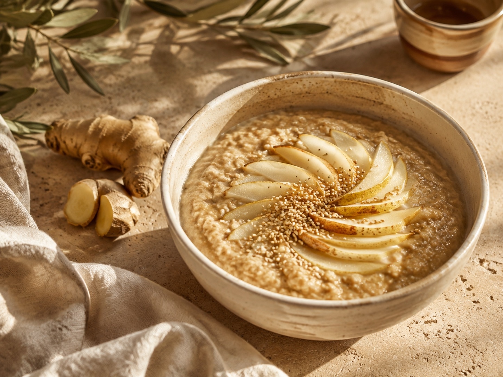
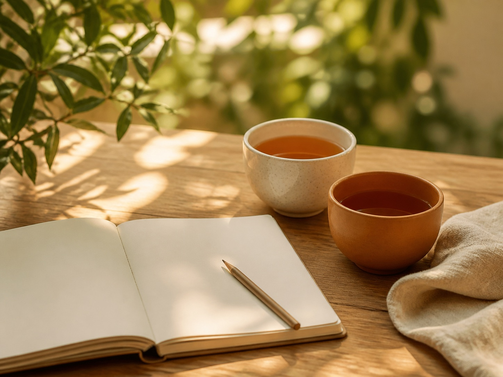

Buik & stoelgang
Een opgeblazen gevoel, gasvorming of moeilijk naar de wc kunnen. We bespreken wanneer je klachten optreden en hoe je eetpatroon en dag eruitzien.
Meer over buikklachten →Traditionele Chinese geneeskunde
Een opgeblazen buik. Menstruatieklachten. Moe wakker worden na een onrustige nacht. Bij Be in Balance begint een TCM-consult bij wat jij ervaart, met aandacht voor je voeding, rust en dagelijkse gewoonten.
Ontdek het TCM-consult
Waar loop jij tegenaan?
Je hoeft je klachten niet perfect te kunnen uitleggen om ze bespreekbaar te maken.
Een opgeblazen gevoel, gasvorming of moeilijk naar de wc kunnen. We bespreken wanneer je klachten optreden en hoe je eetpatroon en dag eruitzien.
Meer over buikklachten →Krampen, spanning of wisselende energie rond je menstruatie. Je cyclus krijgt aandacht als onderdeel van je persoonlijke verhaal.
Meer over je cyclus →Moeite met inslapen, vaak wakker worden of weinig energie overdag. Ook snel koud zijn en de verhouding tussen inspanning en rust komen aan bod.
Meer over slaap en energie →Hoe lang heb je last? Wat maakt het erger of juist prettiger? Hoe slaap je, wat eet je en hoeveel ruimte is er voor herstel? We nemen je klachten én de omstandigheden waarin ze optreden mee.
Vanuit de traditionele Chinese geneeskunde kijken we naar patronen in jouw verhaal. Die vertalen we naar praktische aandachtspunten voor voeding en leefstijl die aansluiten bij je dagelijkse leven.
Een TCM-duiding is een traditionele zienswijze en geen medische diagnose. Bij nieuwe of aanhoudende klachten blijft beoordeling door je huisarts belangrijk.

We bespreken je klachten, gezondheid, gewoonten en wat je hoopt te veranderen.
Je krijgt uitleg en concrete aandachtspunten, bijvoorbeeld voor je maaltijden, eetmomenten of rustmomenten.
Je houdt bij wat je merkt. Als vervolgbegeleiding passend is, bespreken we welke aanpassingen zinvol zijn.
Vertel waar je tegenaan loopt en ontdek of een TCM-consult aansluit bij jouw vraag.
Informeer naar een consult